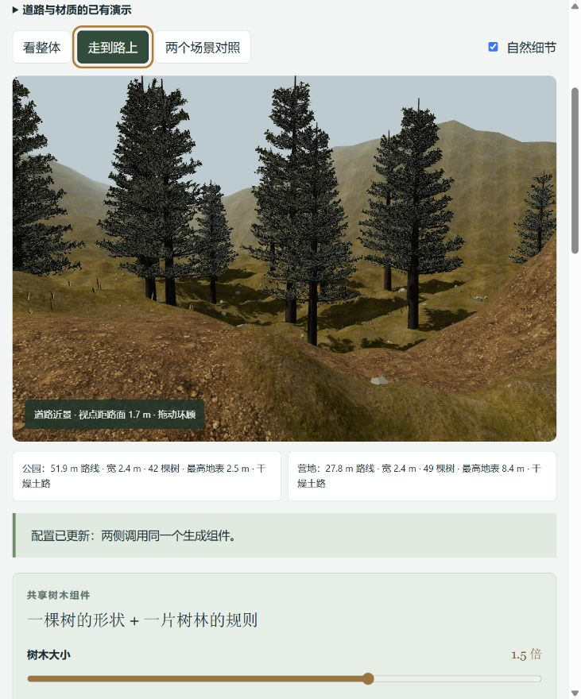
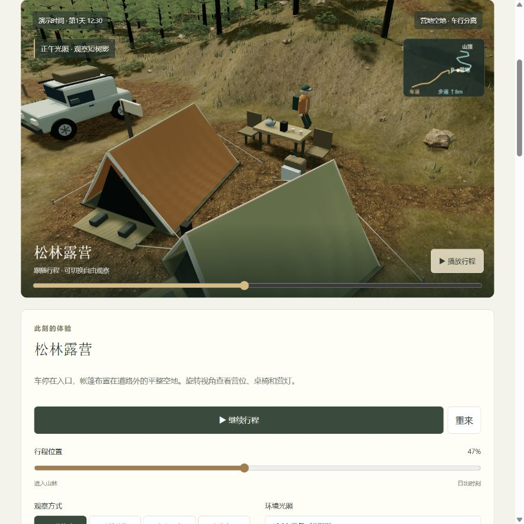
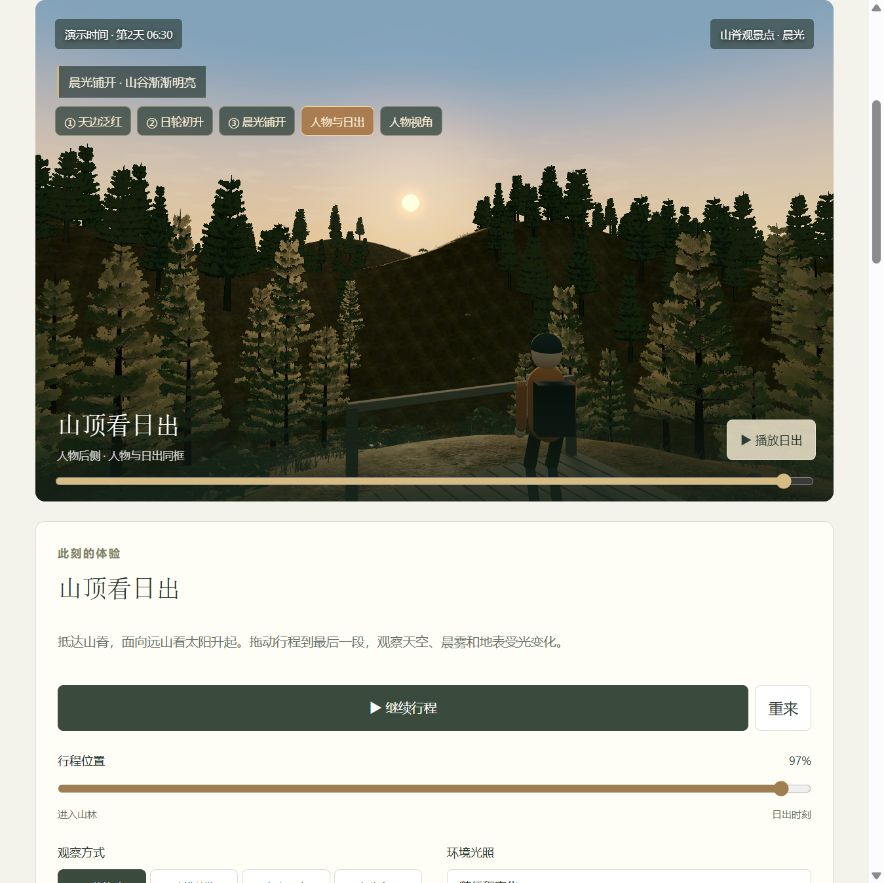

{kind=link}

01 道路：路线怎样融入环境
看什么：路面随山坡起伏，路边从泥土过渡到草地，树木留出通行空间。
动手看：进入复用实验，点击“走到路上”，调整道路宽度，观察两处道路与植被避让一起更新。
沉淀什么：路线采样、地形取高程、道路生成与树冠避让规则。
调整道路与树林 →项目核心意义 / 道路 · 地表 · 树木
把构建自然环境的方法积累下来：从素材、生成规则到可调参数和效果记录，逐步形成能够在不同场景中复用的能力，减少重复搭建与反复调试。
山林、露营和巡游场景用于演示、验证和对照这些能力；地形、地被、光照与性能优化围绕这三项核心展开。后续首先关注效果是否自然、参数是否清楚、能力能否稳定复用。
当前阶段：可交互的程序化原型 · 已有共享模块 · 尚未整理为成熟的独立场景库
看图体验 / 从结果理解能力
以下均为本项目实际运行截图，点击图片可看原图。每次只改变一个条件，观察变化，再到历史版本比较。截图记录当时效果，当前画面会随参数与机位变化。

看什么：路面随山坡起伏，路边从泥土过渡到草地，树木留出通行空间。
动手看：进入复用实验，点击“走到路上”，调整道路宽度，观察两处道路与植被避让一起更新。
沉淀什么：路线采样、地形取高程、道路生成与树冠避让规则。
调整道路与树林 →
看什么：近处泥土颗粒、坡面色差与草丛轮廓分别由材质、混合规则和几何构成。
动手看：进入地表拆解，逐步开启颜色、光照、法线与粗糙度，再用“低视角看轮廓”比较几何草叶。
沉淀什么：素材通道配方、尺度控制、表面混合与地被布置方法。
逐层拆解地表 →
看什么：树干分枝、松枝透空、树林疏密，以及近树、远林与日光的共同表现。
动手看：进入山林日出，暂停行程，拖动视角观察近远树冠；再到布局工作台切换环境组合并生成。
沉淀什么：程序树形、固定种子分布、远近细节切换与受光处理。
观察山林与晨光 →价值在于把已有素材和方法再次用于新场景，并用可调演示与版本记录验证效果。目前树形重复、近远色差、地表重复感仍需改善，尚无量化的效率收益或性能基准。
全部页面 / 本项目网页导航
这些页面共同服务于道路、地表与树木的能力沉淀：看原理、调参数、验证效果、对照版本。
直接打开历史快照
01 / 能力清单
“已实现”表示有代码和可观察结果，不代表已经达到照片级真实或生产级质量。
生成山丘、坡面与远山，在限定模板内调整高度和爬升；道路和树根随地形取高程。
仍有限制公式地形，未接入真实测绘、侵蚀模拟或通用地形编辑。
操作地形参数 →组合颜色、法线与粗糙度贴图，控制纹理尺度、宏观色差和坡面露岩。
仍需打磨依赖现成素材和着色规则；地表重复感、局部混合仍明显。
逐层查看材质作用 →根据路线铺设道路，处理泥土与草地的边缘过渡，调整限定路线的宽度、弯曲和高程。
仍有限制尚不支持任意路网、交叉口、桥隧或工程道路设计。
比较道路与地表 →构建程序松树的分枝、树皮和透明枝叶，提供树形、大小变化与受光调整。
优先改善树种以松树为主；树形重复、近远树冠色差和近似受光仍待改善。
观察树冠与晨光 →用固定种子生成疏密变化，让树冠避开道路和场地；户外场景覆盖约 224 × 224 m 山谷。
仍有限制限定范围的布置规则，没有生态生长模型或任意规模森林验证。
查看树林与场地关系 →按坡度和环境配方分布地被，保持通道与营位留空；组合林间、草甸、岩地三种环境。
仍需打磨物种与形态有限，贴地感、大小分布和材质统一还有改进空间。
切换自然环境组合 →表现日出色带、日轮、树影、雾与远近层次；太阳方向与人物观看方向联动。
仍有限制采用示意时间曲线，未按真实地点和日期计算；阴影精度存在取舍。
查看日出与树影 →树木实例化、森林分块、近处几何与远处图集替换；重建时复用素材并释放生成资源。
尚待验证已有本机功能验证，尚无固定设备、分辨率和观察路线下的性能基准。
进入场景观察 →保存有界参数、环境配方与场景状态；留存前后截图，以及独立代码和素材快照。
仍有限制各演示配置格式尚未统一；参数存档不会冻结当时的渲染实现。
打开可运行历史版本 →02 / 复用方式
双场景演示已共用地形、道路与树木生成器；户外场景组合自然环境模块；营地案例再次使用其中的素材与构件。各场景仍有适配代码，光照等部分仍与场景组装耦合。
查看同一组件在两处使用 →03 / 后续第一关注点
优先处理树形重复、近远树冠色差、草地与道路过渡、地表重复感，再核对不同时段的整体一致性。
明确每项参数改变什么，通过开关与对照让效果来源看得见。
明确模块接口，记录素材、参数、随机种子和版本，在不同限定场景验证。
固定设备、窗口、分辨率和观察路线，记录帧率、资源数量与切换表现。
巡游与营地案例保留为验证场景。经营规划、现实住宅复刻和 AI 需求生成暂不主动扩展。
04 / 效果与版本
一轮只解决一个明确问题。记录固定参数、种子、时段、机位与显示设置，保留相关近景、中景或远景的实际前后截图，说明实现代价、检查结果和剩余问题。重要节点保存可运行快照。
既有记录包含 62 项自动测试与构建检查；这不等同于全面视觉验收或性能基准。历史目录保持封存，修复另建版本。
浏览全部历史版本 →{kind=link}
{kind=link}